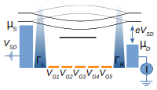

New preprint – May 22, 2024
Coherent feedback control for cavity optomechanical systems with a frequency-dependent mirror
Lei Du, Juliette Monsel, Witlef Wieczorek, Janine Splettstoesser

Ground-state cooling of mechanical resonators is a prerequisite for the observation of various quantum effects in optomechanical systems and thus has always been a crucial task in quantum optomechanics. In this paper, we study how to realize ground-state cooling of the mechanical mode in a Fano-mirror optomechanical setup, which allows for enhanced effective optomechanical interaction but typically works in the (deeply) unresolved-sideband regime. We reveal that for such a two-sided cavity geometry with very different decay rates at the two cavity mirrors when using an appropriate single-sided coherent feedback, it is possible to cool the mechanical mode down to its ground state within a broad range of parameters. This is possible even if the total optical loss is more than seven orders of magnitude larger than the mechanical frequency and the feedback efficiency is relatively low. Importantly, we show that a more standard two-sided feedback scheme is not appropriate to cooperate with a Fano-mirror system.
New article – April 29, 2024
Dissipative and dispersive cavity optomechanics with a frequency-dependent mirror
Juliette Monsel, Anastasiia Ciers, Sushanth Kini Manjeshwar, Witlef Wieczorek, Janine Splettstoesser

An optomechanical microcavity can considerably enhance the interaction between light and mechanical motion by confining light to a sub-wavelength volume. However, this comes at the cost of an increased optical loss rate. Therefore, microcavity-based optomechanical systems are placed in the unresolved-sideband regime, preventing sideband-based ground-state cooling. A pathway to reduce optical loss in such systems is to engineer the cavity mirrors, i.e., the optical modes that interact with the mechanical resonator. In our work, we analyze such an optomechanical system, whereby one of the mirrors is strongly frequency-dependent, i.e., a suspended Fano mirror. This optomechanical system consists of two optical modes that couple to the motion of the suspended Fano mirror. We formulate a quantum-coupled-mode description that includes both the standard dispersive optomechanical coupling as well as dissipative coupling. We solve the Langevin equations of the system dynamics in the linear regime showing that ground-state cooling from room temperature can be achieved even if the cavity is per se not in the resolved-sideband regime, but achieves effective sideband resolution through strong optical mode coupling. Importantly, we find that the cavity output spectrum needs to be properly analyzed with respect to the effective laser detuning to infer the phonon occupation of the mechanical resonator. Our work also predicts how to reach the regime of nonlinear quantum optomechanics in a Fano-based microcavity by engineering the properties of the Fano mirror.
This work is the in-depth theory article associated with the experimental work Opt. Express 31, 30212.
New article – March 18, 2024
Stability of long-sustained oscillations induced by electron tunneling
Jorge Tabanera-Bravo, Florian Vigneau, Juliette Monsel, Kushagra Aggarwal, Léa Bresque, Federico Fedele, Federico Cerisola, G. A. D. Briggs, Janet Anders, Alexia Auffèves, Juan M. R. Parrondo, Natalia Ares
Self-oscillations are the result of an efficient mechanism generating periodic motion from a constant power source. In quantum devices, these oscillations may arise due to the interaction between single electron dynamics and mechanical motion. Due to the complexity of this mechanism, these self-oscillations may irrupt, vanish, or exhibit a bistable behavior causing hysteresis cycles. We observe these hysteresis cycles and characterize the stability of different regimes in single and double quantum dot configurations. In particular cases, we find these oscillations stable for over 20 seconds, many orders of magnitude above electronic and mechanical characteristic timescales, revealing the robustness of the mechanism at play. The experimental results are reproduced by our theoretical model that provides a complete understanding of bistability in nanoelectromechanical devices.
This work is part of the FQxI-funded project Nanomechanics in the solid-state for quantum information thermodynamics.
New preprint – February 29, 2024
Coupling a single spin to high-frequency motion
Federico Fedele, Federico Cerisola, Lea Bresque, Florian Vigneau, Juliette Monsel, Jorge Tabanera, Kushagra Aggarwal, Jonathan Dexter, Sofia Sevitz, Joe Dunlop, Alexia Auffèves, Juan Parrondo, András Pályi, Janet Anders, Natalia Ares
Coupling a single spin to high-frequency mechanical motion is a fundamental bottleneck of applications such as quantum sensing, intermediate and long-distance spin-spin coupling, and classical and quantum information processing. Previous experiments have only shown single spin coupling to low-frequency mechanical resonators, such as diamond cantilevers. High-frequency mechanical resonators, having the ability to access the quantum regime, open a range of possibilities when coupled to single spins, including readout and storage of quantum states. Here we report the first experimental demonstration of spin-mechanical coupling to a high-frequency resonator. We achieve this all-electrically on a fully suspended carbon nanotube device. A new mechanism gives rise to this coupling, which stems from spin-orbit coupling, and it is not mediated by strain. We observe both resonant and off-resonant coupling as a shift and broadening of the electric dipole spin resonance (EDSR), respectively. We develop a complete theoretical model taking into account the tensor form of the coupling and non-linearity in the motion. Our results propel spin-mechanical platforms to an uncharted regime. The interaction we reveal provides the full toolbox for promising applications ranging from the demonstration of macroscopic superpositions, to the operation of fully quantum engines, to quantum simulators.
This work is part of the FQxI-funded project Nanomechanics in the solid-state for quantum information thermodynamics.
New position – January 4, 2024
I became a Research Specialist in the Applied Quantum Physics Laboratory, in the Deptartment of Microtechnology and Nanoscience at Chalmers.
Highlight – December 22, 2023
Our article Integrated microcavity optomechanics with a suspended photonic crystal mirror above a distributed Bragg reflector Opt. Express 31, 30212 was included in Spotlight on Optics.
New article – September 6, 2023
Non-geometric pumping effects on the performance of interacting quantum-dot heat engines
Juliette Monsel, Jens Schulenborg, Janine Splettstoesser

Periodically driven quantum dots can act as counterparts of cyclic thermal machines at the nanoscale. In the slow-driving regime of geometric pumping, such machines have been shown to operate in analogy to a Carnot cycle. For larger driving frequencies, which are required in order to increase the cooling power, the efficiency of the operation decreases. Up to which frequency a close-to-optimal performance is still possible depends on the magnitude and sign of on-site electron-electron interaction. Extending our previous detailed study on cyclic quantum-dot refrigerators [Phys. Rev. B 106, 035405 (2022)], we here find that the optimal cooling power remains constant up to weak interaction strength compared to the cold-bath temperature. By contrast, the work cost depends on the interaction via the dot’s charge relaxation rate, as the latter sets the typical driving frequency for the onset of non-geometric pumping contributions.
This work is part of the special volume of the Frontier of Quantum and Mesoscopic Thermodynamics conference 2022 in the European Physical Journal Special Topics.